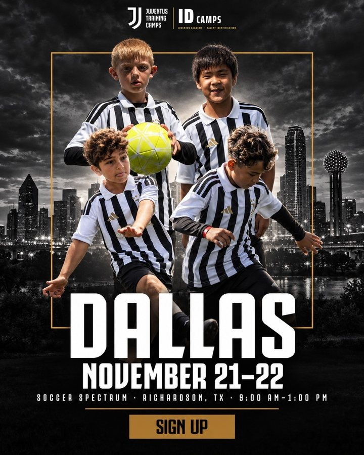
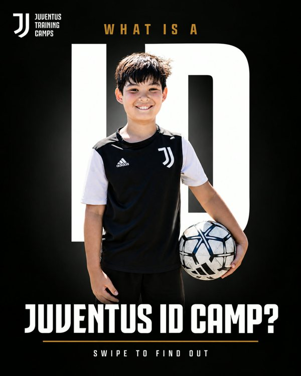
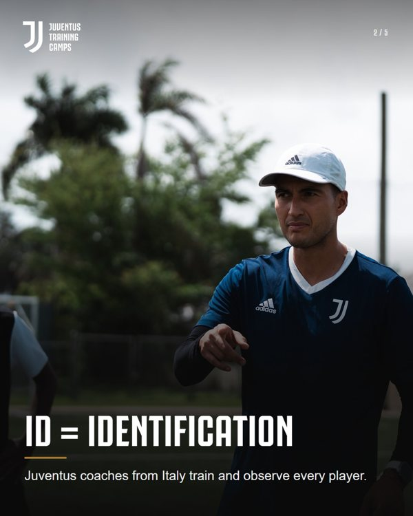
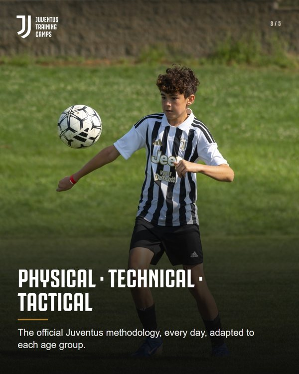
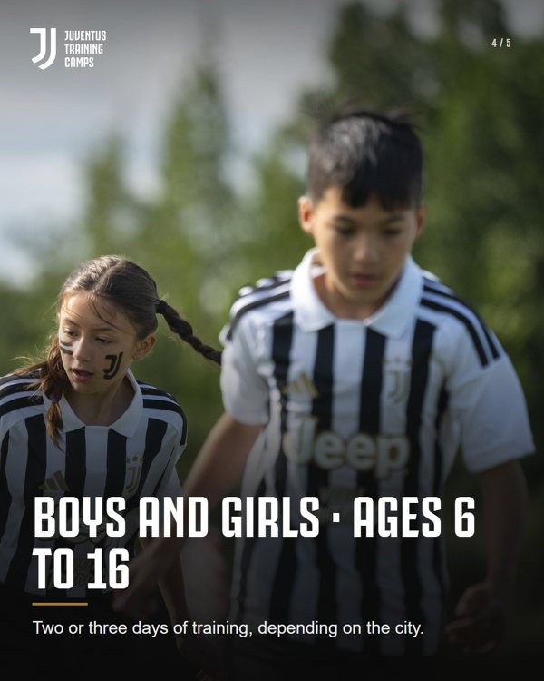
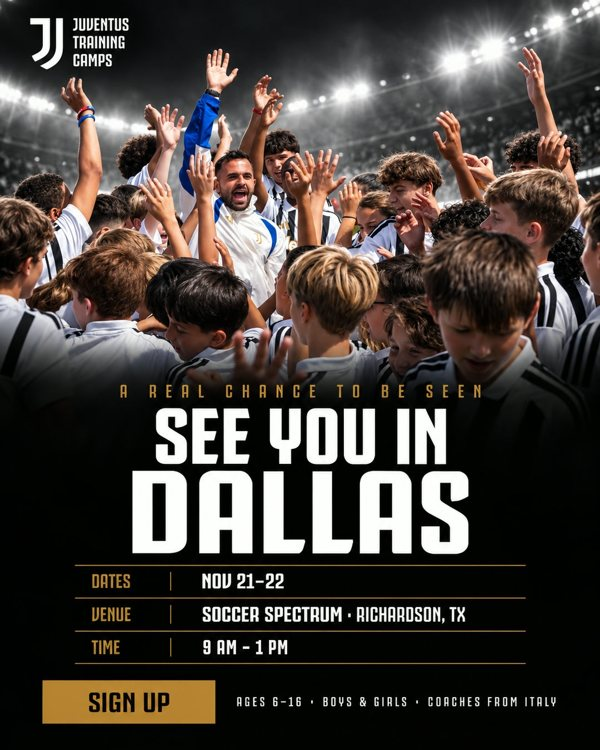
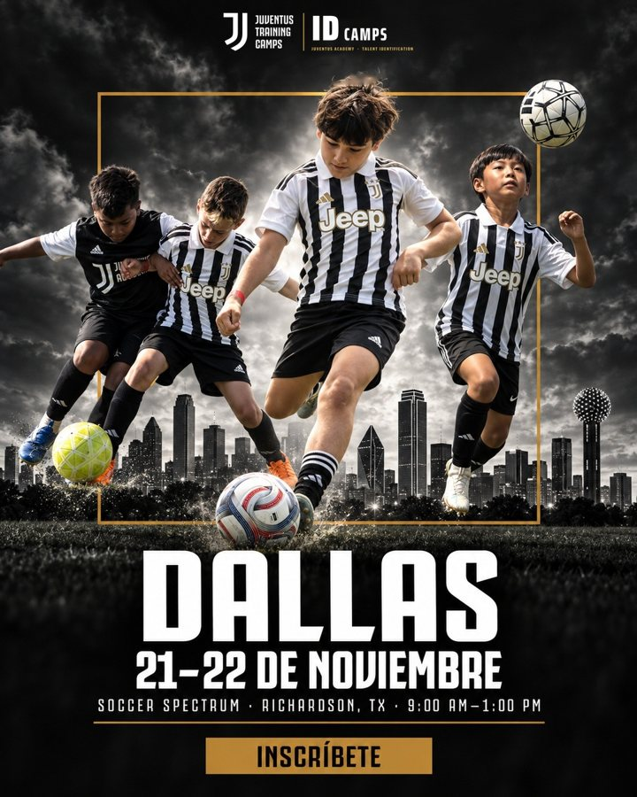
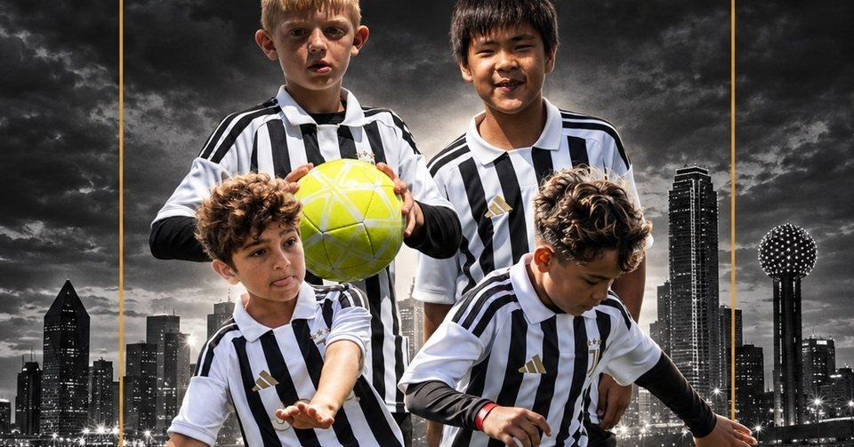

Juventus Camps USA · ID Camp Dallas · 21–22 de noviembre
Plan de redes de 2 semanas para Dallas
Dallas es la sede que más necesita apoyo: 38 familias registradas y 7 pagadas (9 niños), frente a 35 familias pagadas en Chicago. Se propone sumar a los anuncios y a los envíos de email y SMS un plan orgánico en Instagram y Facebook del 15 al 28 de octubre, con el material que ya existe y sin costo.
Qué incluye2 reels, 2 publicaciones, 1 carrusel, 6 historias con stickers y 1 evento de Facebook.
IdiomasEspañol e inglés. En los anuncios, el español rindió mejor en Dallas: el primer reel va en español.
CostoNinguno. Todo el material ya está hecho (son los creativos de los anuncios de Dallas).
Cómo se mideCada enlace lleva su código de origen. La app de registro ya guarda de dónde viene cada familia, así que se podrá ver cuántas se registraron y pagaron desde Instagram y Facebook.
Calendario
Día
Publicación
Historias
Mié 15
P1 Reel Jesús en español
H1
Jue 16
E1 Evento de Facebook
H2 Preguntas + recordatorio
Vie 17
P2 Hero fijado
—
Sáb 18
—
H3 Respuestas
Lun 20
—
H4 Encuesta (día del Email 2)
Mar 21
P3 Carrusel "What is an ID Camp?"
—
Jue 23
—
H5 "Así es un día" (3 historias)
Vie 24
P4 Reel de los coaches
—
Lun 27
P5 Hero en español (con un club)
—
Mar 28
Lectura de resultados
H6 Recordatorio + destacada
Enlace de la bio durante el plan: https://juventuscampsusa.com/id-camps/128/Dallas?utm_source=instagram&utm_medium=bio&utm_campaign=idcamps_2627&utm_term=dal&utm_content=dal_bio (o la página de todas las ciudades con el mismo código, si se prefiere no dejar solo Dallas).
Publicaciones
Cada texto se puede corregir directamente: el botón cambia a "Aprobar con texto corregido" y el cambio queda guardado.
P1
Jesús en español: "Juventus vuelve a Dallas"
Mié 15 oct · Reel · Instagram + Facebook
Por aprobar
El video de Jesús en español que hoy corre como anuncio en Dallas (en los anuncios, el español rindió mejor en Dallas).
Ese mismo día, compartirlo en historias con el enlace (H1).
Texto de la publicación · se puede editar
¡Dallas, volvemos! ⚪⚫ Los entrenadores de Juventus vienen desde Italia el 21 y 22 de noviembre, y tu hijo puede entrenar con ellos sin salir de Dallas.
✅ Metodología oficial de Juventus: físico, técnica y táctica ✅ Para niños y niñas de 6 a 16 años, jugadores y porteros ✅ Los que más se destacan pueden ganarse una experiencia con Juventus en Italia
📅 21 y 22 de noviembre · 9 AM a 1 PM 📍 Soccer Spectrum, Richardson, TX
👉 Inscríbelo: enlace en la bio.
🇺🇸 Dallas, Juventus coaches are coming from Italy on Nov 21–22. Ages 6–16. Link in bio.
P2
Hero de Dallas, fijado arriba del perfil
Vie 17 oct · Post fijado · Instagram
Por aprobar

El póster de Dallas en inglés. Se fija en el perfil durante todo el plan para que quien llegue desde un anuncio vea de una la fecha y la sede.
Fijar en el perfil (Instagram permite hasta 3 publicaciones fijadas).
Texto de la publicación · se puede editar
Dallas, Juventus is back. ⚪⚫
Juventus Academy coaches are flying in from Italy to train your player at the Juventus ID Camp, with the official Juventus methodology: physical, technical and tactical work, adapted to every age.
📅 November 21–22 · 9 AM – 1 PM 📍 Soccer Spectrum, Richardson, TX ⚽ Boys and girls, ages 6–16, players and goalkeepers
👉 Register your player: link in bio.
P3
"What is a Juventus ID Camp?"
Mar 21 oct · Carrusel · Instagram + Facebook
Por aprobar





Deslizar para ver las 5 láminas
Las 5 láminas del carrusel de Dallas que ya corre como anuncio: qué es un ID Camp y cómo es el día. Responde la duda más común de los padres.
Mismo día que el Email 2 de Dallas ("Qué hace el jugador en el camp"): los dos cuentan lo mismo.
Texto de la publicación · se puede editar
What is a Juventus ID Camp? Swipe to find out 👉
ID stands for Identification. Juventus coaches from Italy train and observe every player, using the official Juventus methodology (physical, technical and tactical), adapted to each age group.
📅 November 21–22 · 9 AM – 1 PM 📍 Soccer Spectrum, Richardson, TX ⚽ Boys and girls, ages 6–16
👉 Link in bio to register.
🇪🇸 ¿Qué es un ID Camp de Juventus? Desliza 👉 Entrenadores de Juventus desde Italia, en Dallas el 21 y 22 de noviembre.
P4
Los coaches de Juventus
Vie 24 oct · Reel · Instagram + Facebook
Por aprobar
El video de los coaches que corre como anuncio en Dallas: cómo es una sesión, contado por los entrenadores.
Texto de la publicación · se puede editar
Dallas, these are Juventus coaches, and they're coming from Italy to train your kid. 🇮🇹⚽
Every day has three parts: physical (how they move), technical (the ball, again and again) and tactical (understanding the game). And every player gets corrected up close.
📅 November 21–22 · 9 AM – 1 PM 📍 Soccer Spectrum, Richardson, TX ⚽ Boys and girls, ages 6–16
👉 Link in bio to register.
P5
Hero en español, con un club de Dallas
Lun 27 oct · Post (ideal: en colaboración) · Instagram + Facebook
Por aprobar

El póster de Dallas en español. Si un club o coach de Dallas acepta, se publica "en colaboración": aparece en las dos cuentas y llega gratis a las familias del club. Si no, se publica normal.
Para la colaboración hace falta el usuario de Instagram del club y que acepte la invitación.
Texto de la publicación · se puede editar
Más de 300 familias del área de Dallas ya entrenaron con Juventus. El 21 y 22 de noviembre le toca a tu hijo. ⚽
El ID Camp de Juventus vuelve a Soccer Spectrum: ✅ Entrenadores de Juventus Academy que vienen desde Italia ✅ Técnica, táctica y juego con la metodología oficial ✅ Para niños y niñas de 6 a 16 años, jugadores y porteros
📅 21 y 22 de noviembre · 9 AM a 1 PM 📍 Soccer Spectrum, Richardson, TX
👉 Inscríbelo: enlace en la bio.
Historias
Lo que más mueve en Instagram. Los stickers de enlace, preguntas, encuesta y recordatorio son de Instagram; abajo se simula cómo se verían.
H1
Compartir el reel de Jesús
Mié 15 oct · Historia · Instagram
Por aprobar
🔗 INSCRÍBELO AQUÍ
Texto en pantalla: ¡Dallas, volvemos! 21–22 nov
Enlace del sticker: https://juventuscampsusa.com/id-camps/128/Dallas?utm_source=instagram&utm_medium=story&utm_campaign=idcamps_2627&utm_term=dal&utm_content=dal_story_reel
Simulación: los stickers se ponen en Instagram al publicar.
Indicaciones de la historia · se puede editar
Compartir el reel de Jesús. INSCRÍBELO AQUÍ
H2
Caja de preguntas + recordatorio
Jue 16 oct · Historia · Instagram
Por aprobar
¿Dudas sobre el ID Camp de Dallas?Escribe aquí…ID CAMP DALLAS · 21 NOV⏰ Recordarme
Texto en pantalla: Pregúntanos lo que quieras
Simulación: los stickers se ponen en Instagram al publicar.
Indicaciones de la historia · se puede editar
Caja de preguntas + recordatorio. ¿Dudas sobre el ID Camp de Dallas? · ID CAMP DALLAS · 21 NOV
H3
Respuestas a las preguntas
Sáb 18 oct · Historia · Instagram
Por aprobar
🔗 VER FECHAS Y SEDE
Texto en pantalla: Lo que más preguntan los padres
Enlace del sticker: https://juventuscampsusa.com/id-camps/128/Dallas?utm_source=instagram&utm_medium=story&utm_campaign=idcamps_2627&utm_term=dal&utm_content=dal_story_faq
Simulación: los stickers se ponen en Instagram al publicar.
Indicaciones de la historia · se puede editar
Respuestas a las preguntas. VER FECHAS Y SEDE
H4
Encuesta
Lun 20 oct · Historia · Instagram
Por aprobar
¿En qué posición juega tu hijo?DelanteroMedioDefensaPortero
Simulación: los stickers se ponen en Instagram al publicar.
Indicaciones de la historia · se puede editar
Encuesta. ¿En qué posición juega tu hijo? / Delantero / Medio / Defensa / Portero
H5
"Así es un día en el ID Camp" (3 historias)
Jue 23 oct · Historia · Instagram
Por aprobar
🔗 INSCRÍBELO AQUÍ
Texto en pantalla: Físico · Técnica · Táctica
Enlace del sticker: https://juventuscampsusa.com/id-camps/128/Dallas?utm_source=instagram&utm_medium=story&utm_campaign=idcamps_2627&utm_term=dal&utm_content=dal_story_dia
Simulación: los stickers se ponen en Instagram al publicar.
Indicaciones de la historia · se puede editar
"Así es un día en el ID Camp" (3 historias). INSCRÍBELO AQUÍ
H6
Recordatorio + destacada "DALLAS"
Mar 28 oct · Historia · Instagram
Por aprobar
ID CAMP DALLAS · 21 NOV⏰ Recordarme🔗 REGISTER
Texto en pantalla: Nov 21–22 · Soccer Spectrum
Enlace del sticker: https://juventuscampsusa.com/id-camps/128/Dallas?utm_source=instagram&utm_medium=story&utm_campaign=idcamps_2627&utm_term=dal&utm_content=dal_story_recordatorio
Simulación: los stickers se ponen en Instagram al publicar.
Indicaciones de la historia · se puede editar
Recordatorio + destacada "DALLAS". ID CAMP DALLAS · 21 NOV · REGISTER
Facebook
E1
Evento de Facebook "Juventus ID Camp · Dallas"
Jue 16 oct · Facebook · gratis
Por aprobar

Aparece en los eventos locales de Dallas, y quien marca "Me interesa" recibe recordatorios automáticos de Facebook. El equipo lo comparte en 3 a 5 grupos de padres de fútbol de Dallas y de la comunidad hispana, en la semana 1 y en la semana 2.
Texto de la publicación · se puede editar
Juventus ID Camp · Dallas
Juventus Academy coaches are coming from Italy to train boys and girls ages 6–16, players and goalkeepers, with the official Juventus methodology.
📅 November 21–22 · 9 AM – 1 PM 📍 Soccer Spectrum, Richardson, TX
🇪🇸 Los entrenadores de Juventus vienen desde Italia a Dallas el 21 y 22 de noviembre. Niños y niñas de 6 a 16 años.
Sin precios ni urgencia inventada: el recordatorio usa la fecha real del camp.
Coaches "from Italy", sin nombres ni licencias.
Niños con el uniforme oficial de Juventus.
La prueba social usa la cifra grande (más de 300 familias del área de Dallas).
Cómo se mide (martes 28 de octubre)
Familias registradas y pagadas que llegaron desde Instagram (bio, historias) y desde el evento de Facebook, según el código de origen que guarda la app; alcance y toques en los enlaces de cada historia; y cuántos niños pagados lleva Dallas frente a hoy (9). Con eso se decide si el plan se repite en Midland, Hawaii y las sedes de diciembre.